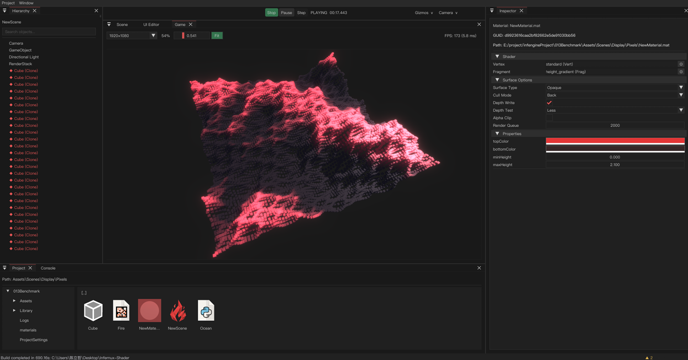

Fast inner loop
Python scripts, hot-reload, and editor-side tooling reduce iteration friction without downgrading the runtime core.
Native runtime. Python production layer. Repository-first workflow.
Infernux pairs a C++17 / Vulkan runtime with a Python layer for gameplay, editor tooling, and render-stack authoring. It is designed for teams that want readable internals, fast iteration, and an MIT-licensed codebase.
Rendering, physics, asset workflows, editor panels, play mode isolation, undo and hot-reload already exist inside one coherent stack.
class StudioPipeline(RenderPipeline):
def render(self, context, cameras):
for camera in cameras:
culling = context.cull(camera)
graph = RenderGraph("FrameGraph")
gbuffer = graph.add_pass("GBuffer")
lighting = graph.add_pass("Lighting")
outline = graph.add_pass("Outline")
lighting.read("gbuffer_normal")
outline.read("depth")
context.apply_graph(graph.build())
context.submit_culling(culling)They said Python belongs in tools, not engines. They said serious rendering must be hidden behind proprietary editor UX. Infernux answers with a different proposition: readable internals, scriptable graphics, and a production path you can actually control.
This capture is intentionally plain: the editor is in Play mode, nothing is being clicked, and the runtime is simply asked to keep 10,000 cubes on screen while the lighting continues to evolve.

The project is shaped around engineering control rather than platform lock-in. Each layer exists to reduce hidden cost for teams building real games and real tools.
Python scripts, hot-reload, and editor-side tooling reduce iteration friction without downgrading the runtime core.
The render stack is structured, inspectable, and scriptable. It is meant to be extended, not worshipped from a distance.
MIT licensing and repository-first development keep the cost model simple: the work is in the code, not in negotiating with a vendor.
This is the part old landing pages usually flatten into a feature dump. Here it is arranged as working capability blocks that speak to how teams actually build projects.
Forward and deferred rendering, PBR materials, cascaded shadows, 8 post-processing effects, shader reflection, and RenderGraph-based pass scheduling.
Jolt-backed rigidbodies, colliders, queries, collision callbacks, layer filtering, and scene-synchronized transforms.
12 panels: Hierarchy, Inspector, Scene View, Game View, Console, Project, UI editor, Toolbar, gizmos, multi-selection, undo/redo, and play-mode scene isolation.
Component lifecycle similar to Unity, serialized fields visible in Inspector, decorators, input APIs, coroutines, prefab system, and script hot-reload.
GUID-based AssetDatabase, .meta sidecar files, dependency tracking, scene serialization, standalone game build via Nuitka, and a PySide6 project launcher.
Python means direct access to CV, data, and ML libraries for gameplay logic, tools, analysis, and offline pipelines.
The important distinction is not only technical. It is about who gets to decide how the render pipeline, tooling surface, and project economics evolve.
The website should not pretend the engine begins and ends at a hero headline. The useful unit is the actual workflow from project bootstrap to runtime validation.
Create or open projects through the launcher, keep dependency boundaries explicit, and manage assets with stable IDs.
Compose scenes, scripts, materials, and render passes while staying inside a consistent data model.
Use Scene View, Inspector, console filters, selection tools, and editor-side UI to shorten iteration distance.
Run the scene with play-mode isolation, profile the render graph, verify scripting hooks, and keep the loop tight.
This framing matters. It sets the correct expectation for contributors and makes the roadmap page useful instead of decorative.
Rendering, physics, audio, scripting, prefabs, game UI, editor authoring, asset workflows, standalone build, and scene tooling are all in place.
Upcoming milestones focus on expanding content scope: animation systems, and advanced UI controls.
Infernux exists for teams who want source access, architectural clarity, and a workflow they can actually reshape. If that sounds like the right direction, start with the docs, inspect the code, and push the engine further.